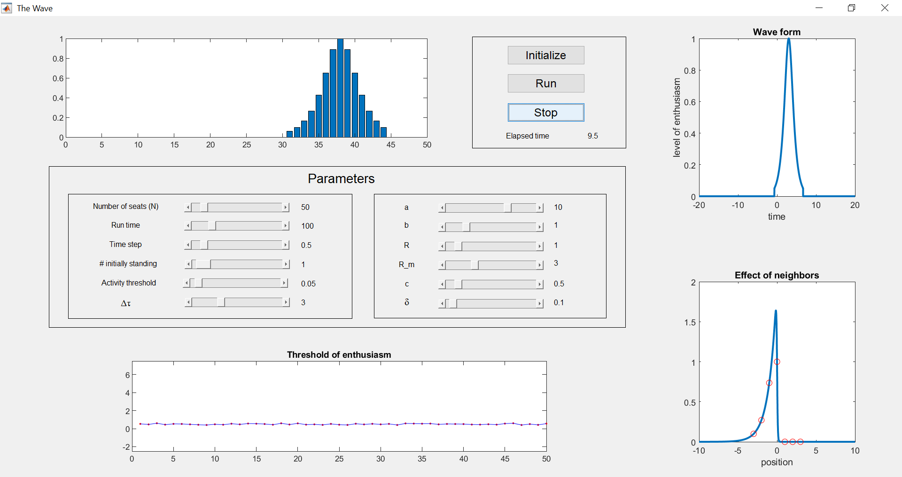

$latex x(i,t) = \left\{ \begin{array}{ll} f(t) & \qquad \hbox{if } f(t) > {\mathcal A} \\ 0 & \qquad \hbox{if } f(t) \le {\mathcal A} \end{array} \right. . \qquad (2.1)$
Fungsi $latex f(t)$ harus berbentuk lonceng, dengan nilai maksimum yang bersesuaian dengan saat orang tersebut telah berdiri sambil mengangkat tangannya. Banyak bentuk fungsi dapat dipilih; di sini kita cukup mengambil $latex f(t) = 1 / \cosh(b (t - t_0)),$ dengan $latex t_0$ sebagai titik pemaksimum $latex f$ dan $latex b$ sebagai parameter yang menentukan durasi $latex \tau$ gelombang, yaitu waktu yang diperlukan satu orang untuk berdiri, mengangkat tangan, lalu duduk kembali. Lebih tepatnya, karena fungsi $latex 1/\cosh(t)$ berorde satu pada interval berpusat di titik asal dengan lebar $latex 10$, $latex \tau$ dapat dihampiri oleh$latex \tau \simeq \frac{10}{b}.$
Kita akan memilih $latex t_0$ sedemikian sehingga $latex t_0 = t_{\mathcal I} + \Delta \tau,$ dengan $latex t_{\mathcal I}$ sebagai saat seseorang menjadi antusias, yaitu saat $latex w(i)$ melampaui $latex s_{th}(i)$, dan $latex \Delta \tau$ sebagai parameter yang dapat kita atur. Kita dapat memandang $latex \Delta \tau$ sebagai waktu reaksi, yang mengukur selang antara saat seseorang menyadari aktivitas para tetangganya dan saat ia berdiri untuk ikut membentuk gelombang.
Karena pengamatan terhadap gelombang manusia menunjukkan bahwa kebanyakan gelombang merambat searah jarum jam, kita akan menggunakan fungsi asimetris untuk menggambarkan gabungan tingkat antusiasme para tetangga seseorang. Sekali lagi, ada banyak pilihan. Di sini kita menggunakan$latex w(i) = \sum_{\begin{array}{c}j,\ |i-j| \le R_m \\ x(j) > {\mathcal A} \end{array}} e^{-|i-j|/R}\ \left(1 - \tanh(a (j-i))\right),$
dengan $latex a$, $latex R$, dan $latex R_m$ sebagai parameter. Fungsi ini membuat penonton $latex i$ dipengaruhi oleh tetangga yang sedang antusias dan duduk pada jarak kurang dari $latex R_m+1$ kursi. Suku eksponensial menunjukkan bahwa pengaruh terbesar berasal dari tetangga terdekat, sedangkan suku tangen hiperbolik membuat tetangga di sebelah kanan penonton $latex i$ lebih berpengaruh daripada tetangga di sebelah kiri (untuk nilai $latex a$ yang positif). Jika baris satu dimensi itu dilihat dari pusat stadion, tetangga yang lebih berpengaruh justru duduk di sebelah kiri penonton $latex i$, sehingga gelombang merambat searah jarum jam.

Gambar 2.1. Antarmuka Pengguna Grafis (GUI) MATLAB untuk model Gelombang Meksiko. [Deskripsi Gambar][/caption] Bab sumber merujuk pada kode MATLAB The_Wave.m untuk menyimulasikan model di atas, tetapi berkas kode itu tidak termasuk dalam sumber buku yang diterbitkan. Gambar 2.1 mempertahankan antarmuka MATLAB sumber sebagai konteks historis. Penggeser pada antarmuka sumber digunakan untuk mengubah berbagai parameter. Saat simulasi berjalan, grafik $latex x(i)$ ditampilkan di jendela kiri atas dan diperbarui pada setiap langkah waktu, $latex t_r$. Jendela kiri bawah menampilkan ambang antusiasme penonton, $latex s_{th}(i),$ sebagai fungsi nomor kursinya $latex i$. Panel kanan atas menampilkan, sebagai fungsi $latex t$, grafik tingkat antusiasme $latex x(i,t)$ (lihat Persamaan (2.1)) dari seseorang yang sedang ikut membentuk gelombang. Panel kanan bawah menggambarkan bagaimana para tetangga memengaruhi perilaku seseorang. Lebih tepatnya, panel tersebut menampilkan grafik$latex e^{-|i-j|/R}\ \left(1 - \tanh(a (j-i))\right)$
sebagai fungsi $latex j-i$; lingkaran merah menunjukkan kontribusi penonton $latex j$ yang duduk dalam jarak $latex R_m$ dari penonton $latex i$. Semua jendela sumber ini diperbarui ketika pengguna mengubah parameter. Nilai parameter bawaannya menghasilkan gelombang selebar sekitar 15 kursi yang merambat searah jarum jam. Catatan edisi: notebook Python terbuka yang disertakan dalam pembaca ini mengimplementasikan ulang model secara independen, menyatakan pilihan algoritmenya secara eksplisit, dan menyediakan visualisasi statis serta eksperimen parameter yang bersesuaian. Berikut beberapa saran untuk menjelajahi model tersebut.
Gambarkan grafik fungsi yang Anda temukan dan periksa bahwa fungsi tersebut naik secara monoton dari −6 (ketika $latex x \to -\infty$) menuju 3 (ketika $latex x \to +\infty$).